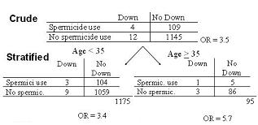

Example: Bias - Study of Spermicide Use and Down Syndrome
Lead Author(s): Jeff Martin, MD
Analysis of Spermicide Use and Down Syndrome Data
We are looking at the effect of spermicide use and the development of Down Syndrome.
- After we stratified by maternal age, we saw these two stratum specific estimates: 3.4 and 5.7.
- We were suspicious because of the small numbers in some of the cells that the stratum-specific estimates differed only because of sampling error.
- When we went ahead and performed a test of homogeneity, we found it was 0.71 and so we were willing to pass on interaction and now we need to assess for confounding.

Crude and Adjusted Estimates
Here the crude estimate is 3.5
What Should We Report?
What should we report as our final answer, the crude or the adjusted estimate?
- The difference between the crude (3.5) and the adjusted (3.8) is 0.30 which is not quite 10%.
Before you answer note the decreased precision in the adjusted estimate compared to the crude estimate, as seen in the confidence interval.
- In this particular example, the CI’s are still well above 1 such that whether you go with the crude or the adjusted so it does not matter much.
- In other words, the overall inference will be the same in either case.
Decreased Precision
If you start adding in adjustment of other potential confounders, then you might start to nudge the 95% CI down to 1.
- So, the point is that with more and more adjustment often comes decreased precision and the question is whether the statistical penalty you must take is worth it.
How Sure Are You that Age Is a Confounder?
Your answer should be guided in just how sure you are that age is a confounder.
- On the one hand, if you are absolutely certain that age is associated with both spermicide use and Down syndrome –
- not from these data but from other sources --
- then it should be adjusted for and you should accept the adjusted OR as the right answer regardless of the penalty in precision.
- But here, whereas we might be pretty sure that age is associated with Down syndrome, how certain are we that age is associated with spermicide use?
- Maybe it is in some populations but not necessarily in this one.
If you are uncertain, then it may not be worth taking the statistical penalty.